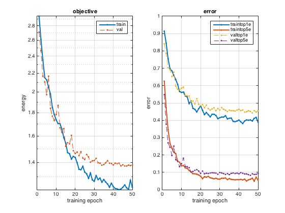
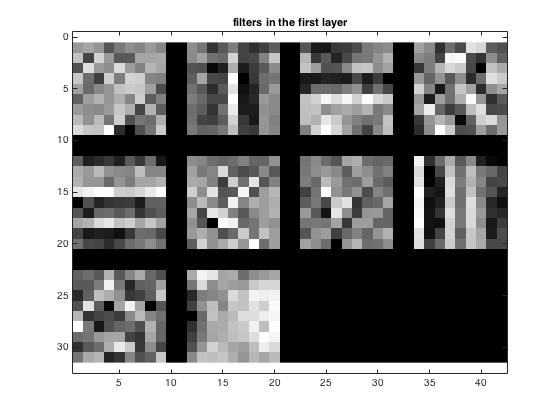
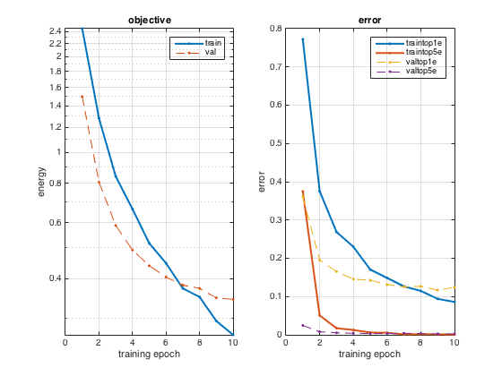
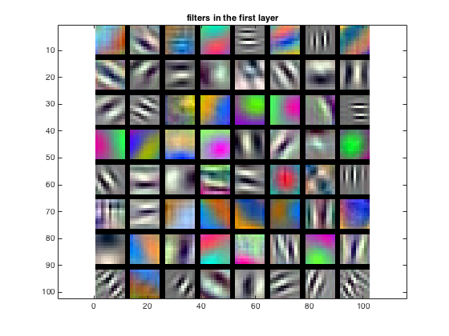

The objective of the project is to design and develop deep convolution networks for scene recognition using MatConvNet toolbox. Project is separated into two parts, first one being training a deep convolutional network from scratch and improving accuracy by jittering, normalization and regularization. Second project requires us to fine tune a pre-trained network to improve accuracy beyond and above 85 percent.
In part 1, we improve our accuracy by doing following things:
Jitterning here means randomly flipping some images. If we flip an image it does not change its category but it results in increase of the training data and it helps for the training.
The images that we have aren't normalized. So we perform a zero mean normalization by subtracting mean from each image.
for i = 1: 50
% mean normalization
im_mean = sum(sum(im(:,:,:,i)))/(size(im,1) * size(im,2));
im_final(:,:,:,i) = im(:,:,:,i) - im_mean;
end
random_samples = randsample(50,25);
% flipping images
im_final(:,:,:,random_samples) = fliplr(im_final(:,:,:,random_samples));
im = im_final;
We regularize out network by adding a layer with dropout rate of 0.5. This dropout layer reduces the dependence of one layer on a previous layer.
We make our network deep by adding more layers, convolution layer, max-pool layer and relu layer.
% layers in our network
net.layers = {} ;
net.layers{end+1} = struct('type', 'conv', ...
'weights', {{f*randn(9,9,1,10, 'single'), zeros(1, 10, 'single')}}, ...
'stride', 1, ...
'pad', 0, ...
'name', 'conv1') ;
net.layers{end+1} = struct('type', 'pool', ...
'method', 'max', ...
'pool', [7 7], ...
'stride', 5, ...
'pad', 0) ;
net.layers{end+1} = struct('type', 'relu') ;
net.layers{end+1} = struct('type', 'conv', ...
'weights', {{f*randn(3,3,10,15, 'single'), zeros(1, 15, 'single')}}, ...
'stride', 1, ...
'pad', 0, ...
'name', 'conv1') ;
net.layers{end+1} = struct('type', 'pool', ...
'method', 'max', ...
'pool', [2 2], ...
'stride', 2, ...
'pad', 0) ; %making the network deeper
% net.layers{end+1} = struct('type', 'relu') ;
net.layers{end+1} = struct('type','dropout','rate',0.5);
net.layers{end+1} = struct('type', 'conv', ...
'weights', {{f*randn(4,4,15,25, 'single'), zeros(1, 25, 'single')}}, ...
'stride', 1, ...
'pad', 0, ...
'name', 'fc1') ;
% Loss layer
net.layers{end+1} = struct('type', 'softmaxloss') ;
% Visualize the network
vl_simplenn_display(net, 'inputSize', [64 64 1 50])
|

Objective and Training error plots for part 1 The accuracy achieved is about 55.3% |
|

Filters for part 1 |
For part 2 of this project, we increase the accuracy by fine-tuning the pre-trained network. We do this by resizing the input images to 224x224. Grayscale images converted to RGB images as the VGG-F network accepts RGB images.
%Read each image and resize it to 224x224
for set = 1:length(sets)
for category = 1:length(categories)
cur_path = fullfile( SceneJPGsPath, sets{set}, categories{category});
cur_images = dir( fullfile( cur_path, '*.jpg') );
if(set == 1)
fprintf('Taking %d out of %d images in %s\n', num_train_per_category, length(cur_images), cur_path);
cur_images = cur_images(1:num_train_per_category);
elseif(set == 2)
fprintf('Taking %d out of %d images in %s\n', num_test_per_category, length(cur_images), cur_path);
cur_images = cur_images(1:num_test_per_category);
end
for i = 1:length(cur_images)
cur_image = imread(fullfile(cur_path, cur_images(i).name));
cur_image = single(cur_image);
if(size(cur_image,3) > 1)
fprintf('color image found %s\n', fullfile(cur_path, cur_images(i).name));
cur_image = rgb2gray(cur_image);
end
cur_image = imresize(cur_image, image_size);
% Stack images into a large 224 x 224 x 1 x total_images matrix
% images.data
imdb.images.data(:,:,1,image_counter) = cur_image;
imdb.images.labels( 1,image_counter) = category;
imdb.images.set( 1,image_counter) = set; %1 for train, 2 for test (val?)
image_counter = image_counter + 1;
end
end
end
We also fine-tune the convolutional network by making following changes:
net.layers{21} = struct('type','dropout',...
'rate',0.5);
net.layers{20} = net.layers{19};
net.layers{19} = net.layers{18};
net.layers{18} = struct('type','dropout',...
'rate',0.5);
net.layers{22} = struct('type', 'conv', ...
'weights', {{f*randn(1,1,4096,15, 'single'), zeros(1, 15, 'single')}}, ...
'stride', 1, ...
'pad', 0, ...
'name', 'fc8') ;
net.layers{23} = struct('type', 'softmaxloss') ;
vl_simplenn_display(net, 'inputSize', [224 224 3 50])
|

Objective and Training error plots for part 2 The accuracy achieved is about 87.8% |
|

Filters for part 2 |